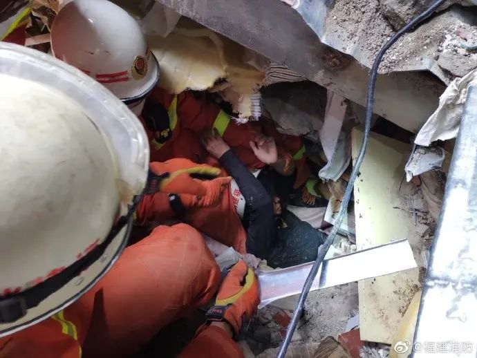

泉州一新冠隔离点酒店整体坍塌，70人被困已救出34人
原文链接 备份链接 在围观者拍摄的视频中 有人员被陆续从事故地点背出 消防、警方和医护人员在现场紧急救援。孙虹摄 3月7日晚7点多，泉州市欣佳酒店发生楼体坍塌。该酒店为当地一处新冠肺炎密切接触者隔离观察点。 欣佳酒店位于泉州市鲤城区南 …
澎湃新闻 综合报道
今天，福建泉州相关部门召开新闻发布会。泉州市政府常务副市长洪自强在会上表示：事发坍塌建筑建设于2013年，主体7层，为钢结构建筑物。酒店有各类客房共计66间。已成立事故调查组，该楼房业主已被公安部门控制。
据@应急管理部最新消息，福建省泉州市欣佳酒店“3·7”房屋坍塌事故现场共有71人被困（不含自救逃生的9人）。截至3月8日16时，已救出48人（其中10人死亡，38人送医治疗），正在搜救的还有23人。

据@中国消防消息，11时24分，消防员成功将一名12岁的小男孩救出，孩子第一句话是“妈妈在我下面，还活着”。
视频来源：@中国消防
据@福建消防消息，13时14分，男孩的妈妈上半身已经出来了，部分身体还被卡住，消防救援人员给她喂水。13时26分，消防救援人员通过蛇眼生命探测仪进行探测，发现男孩的妈妈的小腿部位被角铁卡住了，现在正在想办法解救。

据福建消防，8日8点13分，厦门市消防救援支队救出一名被困男子，他的妻子和孩子还被压在底下，救援正在进行。据央视新闻，男子获救时指着妻孩的方向，反复向消防员强调他们的位置。
视频来源：央视新闻

下午两点，厦门市消防救援人员救出一名男孩，是该男子的儿子。
（本文综合自澎湃新闻、@应急管理部、@央视新闻、@中国消防、@福建消防）
本期编辑 邢潭
推荐阅读


原文链接 备份链接 在围观者拍摄的视频中 有人员被陆续从事故地点背出 消防、警方和医护人员在现场紧急救援。孙虹摄 3月7日晚7点多，泉州市欣佳酒店发生楼体坍塌。该酒店为当地一处新冠肺炎密切接触者隔离观察点。 欣佳酒店位于泉州市鲤城区南 …
原文链接 备份链接 该酒店之前被改造为泉州鲤城区的医学观察点，用以隔离观察密切接触者，事发时被困人数约70人。参与救援的人士表示，现场情况“惨烈”。知情人称，酒店所在建筑曾进行大规模改造 文 |《财经》记者 俞琴 白兆东 鲁伟 编辑 | …
原文链接 备份链接 澎湃新闻记者 汤琪 发自武汉 池莉。受访者供图 著名作家、武汉市文联主席池莉没想到的是，在2020年冬春交际的时节，她写于20多年前的一本小说，突然又多了那么多读者。 1月29日，一位网友在网上发布了池莉的小说《霍乱之 …
原文链接 备份链接 澎湃新闻记者 王选辉 实习生 郑旭 过去一段时间，不少援助湖北的医疗队已经开始配备专门的心理医生，专门为医护人员做心理辅导和危机干预，郑一雄就是其中的一员。 郑一雄医生是厦门市仙岳医院的精神科副主任医师、心理治疗师，同 …
原文链接 备份链接 工作中的王海涛。摄影：付春来 记者：杨舒鸿吉 “ 救护车内的方寸空间，是摆渡生命的“方舟”，有时候承载的是命运流转的重要瞬间。 ” 每次出车转运新冠肺炎患者，对于武汉120救护车驾驶员王海涛而言，都是一次生命的“摆 …